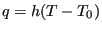
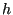
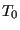
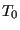

Next: Radiative heat flux Up: Loading Previous: Distributed heat flux Contents
Convective heat flux is a flux depending on the temperature difference between the body and the adjacent fluid (liquid or gas) and is triggered by the *FILM card. It takes the form
|  | (613) |
where is the a flux normal to the surface,  is the film coefficient,  is
the body temperature and  is the environment fluid temperature (also called
sink temperature). Generally, the sink temperature is known. If it is not, it
is an unknown in the system. Physically, the convection along the surface can
be forced or free. Forced convection means that the mass flow rate of the
adjacent fluid (gas or liquid) is known and its temperature is the result of
heat exchange between body and fluid. This case can be simulated by CalculiX
by defining network elements and using the *BOUNDARY card
for the first degree of freedom in the midside node of the element. Free convection, for which the mass flow rate is a
n unknown too and a result of temperature differences, cannot be simulated.
is
the body temperature and  is the environment fluid temperature (also called
sink temperature). Generally, the sink temperature is known. If it is not, it
is an unknown in the system. Physically, the convection along the surface can
be forced or free. Forced convection means that the mass flow rate of the
adjacent fluid (gas or liquid) is known and its temperature is the result of
heat exchange between body and fluid. This case can be simulated by CalculiX
by defining network elements and using the *BOUNDARY card
for the first degree of freedom in the midside node of the element. Free convection, for which the mass flow rate is a
n unknown too and a result of temperature differences, cannot be simulated.